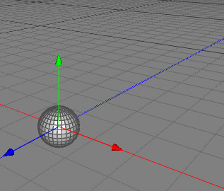
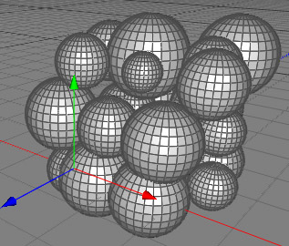

配列複製ツール
配列複製ツールは、ポリゴン選択範囲の複数コピーを作成するために使われる事ができます。これは、ほとんど複写ツールと同じですが、３次元の配列にコピーを作成し、そのコピーはローカル座標の X / Y / Z 軸に整列している点が違います。
 
-X 軸に沿ってポリゴン選択範囲を２回複製しています。
編集モード
配列複製ツールは、ローポリゴンオブジェクトにのみ適用する事ができます。これはポリゴンモードでのみ使用可能です。

配列複製ツールを使用するために、ローポリゴンオブジェクトの任意のポリゴンを選択します。もし何もポリゴンを選択していない場合は、すべてのポリゴンメッシュが複製されます。そして、" ツール ポリゴン配列複製 " メニューコマンドを呼び出します。次に、プロパティエディタで配列複製ツールの必要なすべてのパラメータを設定します。"適用" をクリックすると、選択されたポリゴンが配列上に複製されます。
ポリゴン配列複製 " メニューコマンドを呼び出します。次に、プロパティエディタで配列複製ツールの必要なすべてのパラメータを設定します。"適用" をクリックすると、選択されたポリゴンが配列上に複製されます。
補助キー
-
- なし
プロパティ
- X方向のコピー配置数: X 軸方向のコピー数
- Y方向のコピー配置数: Y 軸方向のコピー数
- Z方向のコピー配置数: Z 軸方向のコピー数
- 除外率: コピーされない割合
- オフセット配置: コピーが作成される間隔の距離
- 位置ランダム値: 各複製の位置にランダムな値を追加
- 拡大縮小ランダム値: 複製の拡大縮小値に乗算されるランダムな拡大縮小値
- 比率を保持: "拡大縮小ランダム値" プロパティを使用した場合に、オブジェクトの比率を保持
- 回転ランダム値: 複製にランダムな回転値を追加
- 適用: "適用" ボタンをクリックして、配列複製ツールを実行